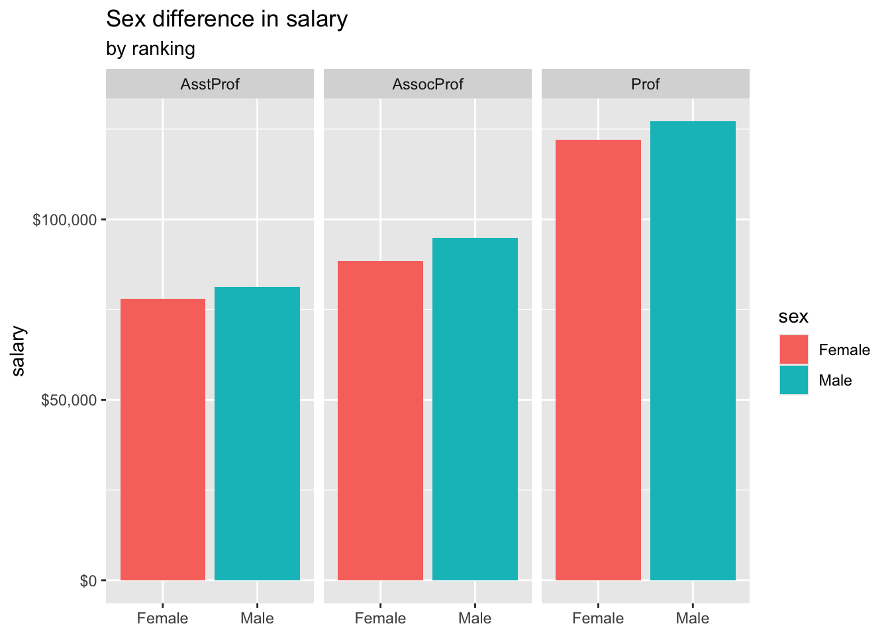

I am at this time (Feb, 2025) in the process of applying to phd programs, as well as figuring out what I would like to do in the future. For people in the research track, becoming a professor seems to be at the end of this route. Whenever people ask me about future plans, I would say do research and teach, two major aspect of a professor’s life.
While I was browsing through the packages in R in search of the topic for portfolio 2, I spotted this dataset about professors’ salary. I am curious how much money professors earn back in 2008-09.
First, let’s load the package carData and the dataset Salaries.
library(carData)
library(tidyverse)
library(car)
library(scales)
library(lavaan)
prof <- SalariesNext, let’s take a look at the dataset. Like the labs we do, how many observations are there? What are the variables in this dataset?
nrow(prof)## [1] 397names(prof)## [1] "rank" "discipline" "yrs.since.phd" "yrs.service"
## [5] "sex" "salary"There are 397 observations, and 6 variables. Variables include the rank of professors (i.e., assistant, associate, or prof), discipline these professors are in (i.e., theoretical or applied), years since earning PhD, years of being a professor, the sex of the professor (i.e., female or male), and the nin-month salary in dollars.
Are males’ salary higher than females’?
prof %>%
filter(sex == "Male") %>%
summary()## rank discipline yrs.since.phd yrs.service sex
## AsstProf : 56 A:163 Min. : 1.00 Min. : 0.00 Female: 0
## AssocProf: 54 B:195 1st Qu.:12.00 1st Qu.: 7.00 Male :358
## Prof :248 Median :22.00 Median :18.00
## Mean :22.95 Mean :18.27
## 3rd Qu.:33.00 3rd Qu.:27.00
## Max. :56.00 Max. :60.00
## salary
## Min. : 57800
## 1st Qu.: 92000
## Median :108043
## Mean :115090
## 3rd Qu.:134864
## Max. :231545prof %>%
filter(sex == "Female") %>%
summary()## rank discipline yrs.since.phd yrs.service sex
## AsstProf :11 A:18 Min. : 2.00 Min. : 0.00 Female:39
## AssocProf:10 B:21 1st Qu.:10.00 1st Qu.: 4.00 Male : 0
## Prof :18 Median :17.00 Median :10.00
## Mean :16.51 Mean :11.56
## 3rd Qu.:23.50 3rd Qu.:17.50
## Max. :39.00 Max. :36.00
## salary
## Min. : 62884
## 1st Qu.: 77250
## Median :103750
## Mean :101002
## 3rd Qu.:117002
## Max. :161101First comment is that there were 358 male professors and only 39
female professors. The mean salary for female was 101,002, whereas the
mean salary for male was 115,090. It was a 14,000 difference. Wow!
Another comment, I would be happy with this salary.
I want to conduct a t-test to see if this difference is significant.
First, run a couple assumption testing. Before t-test, check normality
and equal variance. For test of normality, I consulted: https://www.sheffield.ac.uk/media/30585/download?attachment.
#create two separate variables, male_salary and female_salary, in order to run assumption testing.
male_salary <- prof %>%
filter(sex == "Male") %>%
pull(salary)
female_salary <- prof %>%
filter(sex == "Female") %>%
pull(salary)
#normality testing
shapiro.test(male_salary)##
## Shapiro-Wilk normality test
##
## data: male_salary
## W = 0.95877, p-value = 1.735e-08shapiro.test(female_salary)##
## Shapiro-Wilk normality test
##
## data: female_salary
## W = 0.94665, p-value = 0.06339#equal variance testing, first change the sex column into numeric
prof <- prof %>%
mutate(sex_numeric = ifelse(sex == "Male", 0, 1))
leveneTest(salary ~ sex, data = prof)## Levene's Test for Homogeneity of Variance (center = median)
## Df F value Pr(>F)
## group 1 0.8401 0.3599
## 395The normality test showed that male’s is significant. This probably is fine because male has a large sample size, so it’s very likely to be significant. Female’s is normal distribution. In addition, we can assume equal variance. Now, let’s run the t-test.
t.test(male_salary, female_salary, var.equal = TRUE)##
## Two Sample t-test
##
## data: male_salary and female_salary
## t = 2.7817, df = 395, p-value = 0.005667
## alternative hypothesis: true difference in means is not equal to 0
## 95 percent confidence interval:
## 4131.107 24044.910
## sample estimates:
## mean of x mean of y
## 115090.4 101002.4There is a significant difference between male and female professors.
After comparing males to females in their salary, I am interested in the differences in salary across the ranking groups. I am assuming that professor will earn more than associate professor, and associate professor will earn more than assistant professor. To find out, we will calculate a mean score for each of the three groups.
prof %>%
filter(rank == "Prof") %>%
summarize(mean_salary = mean(salary, na.rm = TRUE))## mean_salary
## 1 126772.1prof %>%
filter(rank == "AssocProf") %>%
summarize(mean_salary = mean(salary, na.rm = TRUE))## mean_salary
## 1 93876.44prof %>%
filter(rank == "AsstProf") %>%
summarize(mean_salary = mean(salary, na.rm = TRUE))## mean_salary
## 1 80775.99The output actually has too much information than I really need. We can still read the table. The mean salary for professor is 126,772, the mean for associate professor is 93,876, and the mean for assistant professor is 80,776. That’s really high salary, I am becoming more interested in becoming a professor.
Next, I want to know the sex difference in salary in each rank group by plotting a graph
prof %>%
ggplot(mapping = aes(x = sex, y = salary, fill = sex)) + facet_wrap(~rank, nrow = 1) +
stat_summary(fun = mean, geom = "bar") +
labs(title = "Sex difference in salary", subtitle = "by ranking", x = NULL) +
scale_y_continuous(labels = dollar_format())
We got a beautiful graph here. This clearly shows that prof salary > assoc prof salary > assit prof salary. In addition, male salary is always higher than female salary.
Now, I am curious, if salary is positively correlated with yrs since graduate and yrs since service.
model1 <- lm(salary ~ yrs.since.phd, data = prof)
summary(model1)##
## Call:
## lm(formula = salary ~ yrs.since.phd, data = prof)
##
## Residuals:
## Min 1Q Median 3Q Max
## -84171 -19432 -2858 16086 102383
##
## Coefficients:
## Estimate Std. Error t value Pr(>|t|)
## (Intercept) 91718.7 2765.8 33.162 <2e-16 ***
## yrs.since.phd 985.3 107.4 9.177 <2e-16 ***
## ---
## Signif. codes: 0 '***' 0.001 '**' 0.01 '*' 0.05 '.' 0.1 ' ' 1
##
## Residual standard error: 27530 on 395 degrees of freedom
## Multiple R-squared: 0.1758, Adjusted R-squared: 0.1737
## F-statistic: 84.23 on 1 and 395 DF, p-value: < 2.2e-16It seems like this model can explain 17.6% of the variance in salary.
Years since phd is a significant predictor for salary. The slope is
985.3, meaning that with an additional year since phd, a person will
earn an additional $985.3.
Let’s try another model with more predictors.
model2 <- lm(salary ~ yrs.since.phd + yrs.service, data = prof)
summary(model2)##
## Call:
## lm(formula = salary ~ yrs.since.phd + yrs.service, data = prof)
##
## Residuals:
## Min 1Q Median 3Q Max
## -79735 -19823 -2617 15149 106149
##
## Coefficients:
## Estimate Std. Error t value Pr(>|t|)
## (Intercept) 89912.2 2843.6 31.620 < 2e-16 ***
## yrs.since.phd 1562.9 256.8 6.086 2.75e-09 ***
## yrs.service -629.1 254.5 -2.472 0.0138 *
## ---
## Signif. codes: 0 '***' 0.001 '**' 0.01 '*' 0.05 '.' 0.1 ' ' 1
##
## Residual standard error: 27360 on 394 degrees of freedom
## Multiple R-squared: 0.1883, Adjusted R-squared: 0.1842
## F-statistic: 45.71 on 2 and 394 DF, p-value: < 2.2e-16Our model 2 shows some interesting results. The R^2 is 0.1883, meaning that our model explains 18.8% of the variance in salary. Originally, I hypothesized that years since phd and years of service are both going to positively explain salary, but the results showed otherwise. The slope for years since phd is 1562.9, way bigger than model1. The slope for years of service is -629.1, which is also significant. This means that with an additional year of service, a person’s salary will drop $629.1, controlling for years since phd. I can’t believe this is a negative relationship. I am interested in the zero order correlation now.
cor.test(prof$yrs.service, prof$salary, use = "complete.obs")##
## Pearson's product-moment correlation
##
## data: prof$yrs.service and prof$salary
## t = 7.0602, df = 395, p-value = 7.529e-12
## alternative hypothesis: true correlation is not equal to 0
## 95 percent confidence interval:
## 0.2443740 0.4193506
## sample estimates:
## cor
## 0.3347447This is weird. Zero order correlation shows a positive relationship between years of service and salary.
What is I run a regression with only one variable - years of service.
model3 <- lm(salary ~ yrs.service, data = prof)
summary(model3)##
## Call:
## lm(formula = salary ~ yrs.service, data = prof)
##
## Residuals:
## Min 1Q Median 3Q Max
## -81933 -20511 -3776 16417 101947
##
## Coefficients:
## Estimate Std. Error t value Pr(>|t|)
## (Intercept) 99974.7 2416.6 41.37 < 2e-16 ***
## yrs.service 779.6 110.4 7.06 7.53e-12 ***
## ---
## Signif. codes: 0 '***' 0.001 '**' 0.01 '*' 0.05 '.' 0.1 ' ' 1
##
## Residual standard error: 28580 on 395 degrees of freedom
## Multiple R-squared: 0.1121, Adjusted R-squared: 0.1098
## F-statistic: 49.85 on 1 and 395 DF, p-value: 7.529e-12This is so strange. Years of service is now a positive predictor of salary. It is something that I can’t explain. Years of service is a positive predictor of salary on its own, but when controlling for years since phd, it becomes a negative predictor. If you know why this is the case, please let me know!